Subdivision
Top-down operations that start with a large shell and carve it into named zones. Mixes freely with the bottom-up combinators: any subdivided node can be replaced later via refine or labelled via assign.

subdivide_x,subdivide_ytake proportional ratios summing to 1.split_x,split_ytake absolute positions (split lines).partition_x,partition_ydivide into equal parts.carveplaces a named rectangle at an absolute position within a zone.refinereplaces a named zone with the output of a transformation.assign/assign_allstampuseandpropsonto named zones.
# Split a 20×12 shell into entry (6 m) + middle (10 m) + service (4 m) zones.
envelope(20.0, 12.0, 3.0) |>
d -> split_x(d, [6.0, 16.0], [:entry, :middle, :service]) |>
assign(:entry, :entrance) |>
assign(:middle, :open_office) |>
assign(:service, :storage)KhepriBase.subdivide_x — Function
subdivide_x(desc, ratios, ids)Subdivide a space along x into strips with the given ratios (must sum to 1) and label each strip with the corresponding entry from ids.
KhepriBase.subdivide_y — Function
subdivide_y(desc, ratios, ids)Subdivide a space along y into strips with the given ratios (must sum to 1) and label each strip with the corresponding entry from ids.
KhepriBase.split_x — Function
split_x(desc, positions, ids)Split a space along x at the given absolute positions, producing length(positions) + 1 zones labeled by ids. Positions must be strictly ascending and lie inside (0, desc_width(desc)).
split_x(envelope(10, 5, 3), [3.0, 8.0], [:a, :b, :c])yields zones of width 3, 5, and 2 metres.
KhepriBase.split_y — Function
split_y(desc, positions, ids)Split a space along y at the given absolute positions, producing length(positions) + 1 zones labeled by ids.
KhepriBase.partition_x — Function
partition_x(desc, n, id_prefix)Partition a space into n equal strips along x, labeling them id_prefix_1, id_prefix_2, etc.
KhepriBase.partition_y — Function
partition_y(desc, n, id_prefix)Partition a space into n equal strips along y, labeling them id_prefix_1, id_prefix_2, etc.
KhepriBase.carve — Function
carve(desc, id, use; x, y, width, depth)Carve out a rectangular sub-zone at position (x, y) with the given width and depth, labeling it id with usage use.
KhepriBase.refine — Function
refine(desc, zone_id, transform)
refine(zone_id, transform)Apply transform (a function SpaceDesc -> SpaceDesc) to the sub-zone identified by zone_id. The two-argument form returns a curried closure suitable for piping.
KhepriBase.assign — Function
assign(desc, zone_id, use; props=(;))
assign(zone_id, use; props=(;))Assign a programmatic use (e.g. :bedroom) and optional props to zone zone_id. The two-argument form returns a curried closure suitable for piping.
KhepriBase.assign_all — Function
assign_all(desc, id_prefix, use; props=(;))
assign_all(id_prefix, use; props=(;))Assign use and props to every zone whose id starts with id_prefix_. The two-argument form returns a curried closure suitable for piping.
KhepriBase.subdivide_remaining — Function
subdivide_remaining(desc, blocks)
subdivide_remaining(blocks)Given a base desc containing a single central carved hole, add perimeter blocks around that hole. blocks is a vector of (block_id, position) pairs where position is :north, :south, :east, or :west.
envelope(50.0, 50.0, 3.0) |>
d -> carve(d, :courtyard, :garden; x=12, y=12, width=26, depth=26) |>
subdivide_remaining([
(:north_block, :north),
(:south_block, :south),
(:east_block, :east),
(:west_block, :west)])The two-argument form returns a curried closure suitable for piping.
KhepriBase.subdivide_radial — Function
subdivide_radial(base, ratios, ids)Split a polar envelope into concentric annular bands by proportional radial ratios (must sum to 1.0), naming each band from ids.
KhepriBase.subdivide_angular — Function
subdivide_angular(base, ratios, ids)Split a polar envelope into angular wedges by proportional ratios (must sum to 1.0), naming each wedge from ids.
KhepriBase.partition_angular — Function
partition_angular(base, count, id_prefix)Split a polar envelope into count equal angular wedges, naming the zones <id_prefix>_1, <id_prefix>_2, …
KhepriBase.partition_radial — Function
partition_radial(base, count, id_prefix)Split a polar envelope into count equal concentric annular bands, naming the zones <id_prefix>_1, <id_prefix>_2, …